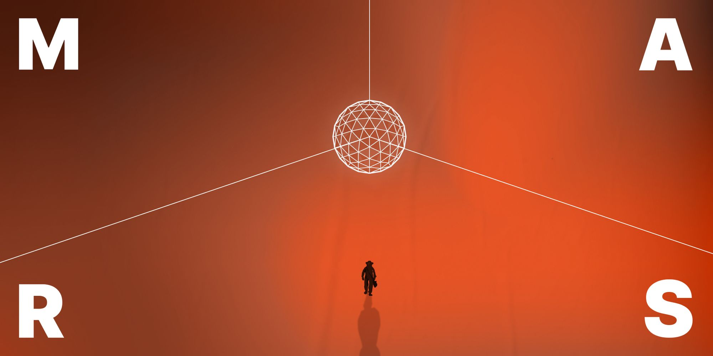
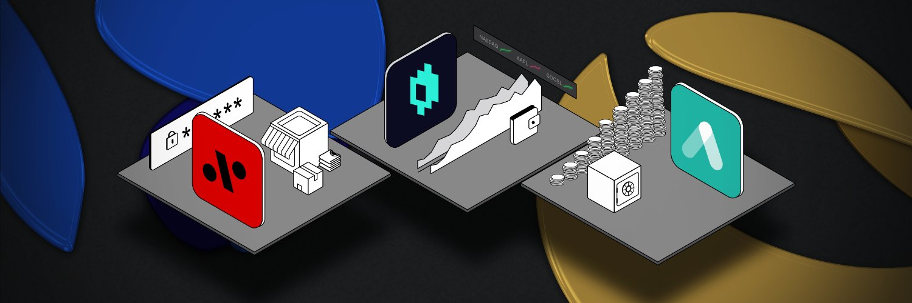

Mars Protocol: a financial primitive
Mars is not a service - it’s a protocol... aka a financial primitive.
But what does that mean, exactly, and why does it matter?

Think of a financial primitive like a programming language. It’s a tool that gives humans a standard way to communicate with machines. And even more interestingly, it gives machines a way to communicate with one another. In the case of Mars, the machines are smart contracts.
Mars aims to be the most widely-used credit protocol on the Terra blockchain (and eventually other blockchains). Once you have that primitive in place, the real fun begins. End users and programmers can use Mars not just to lend and borrow tokens, but other protocols and platforms can use Mars, too. And they could use it in some magical ways.
Mars will launch with one of these offerings itself in the Fields of Mars. This yield farming protocol will give other protocols the ability to borrow tokens from Mars without depositing tokens of their own -- i.e., borrowing tokens from mars on an "uncollateralized" basis.
Levana will build "leverage" tokens on top of Mars. And other protocols could extend Mars dramatically. For example, Ethereum protocols like Alchemix offer "self-repaying loans" built atop Yearn Finance.
We could see similar offerings on Mars.

Eventually, TradFi could get involved, too. Using their centralized credit databases, they might issue loans to their customers using tokens that come from Mars. Insurance protocols could use Mars to boost yields off their "float" (money that the protocol holds onto between receiving premiums and paying out claims). Just like the HTTPS protocol enables developers around the world to build web applications its creators never could have envisioned, Mars is designed to be a base layer for radical new dapps.
The only true barrier is the imagination of a growing network of Terra and Rust devs around the world.